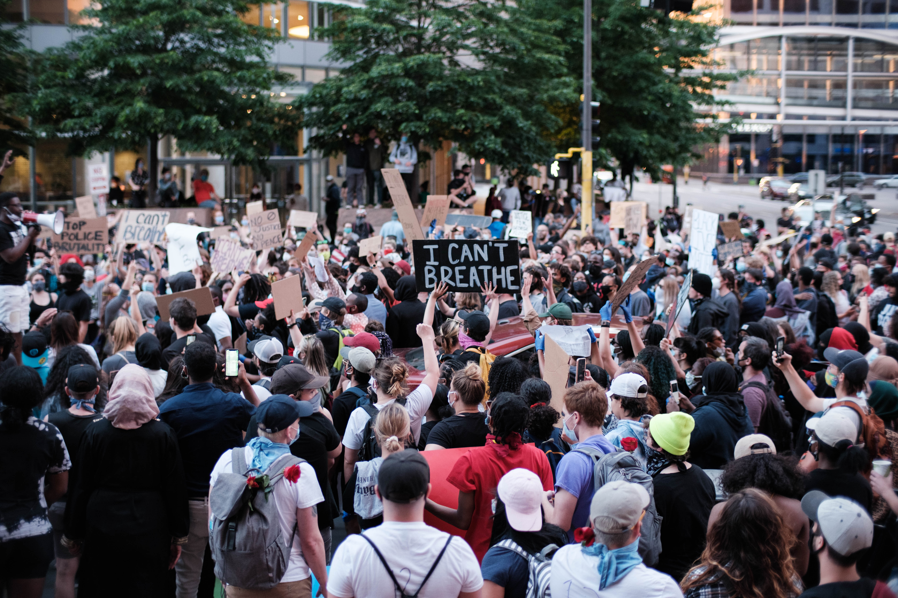

Five Largest Protests in U.S. History

The tradition of protests that demand progressive change in the United States continue.
Here are the country's five of the top protests in terms of attendance:
- George Floyd Protests George Floyd Protests nationwide in 2020 with an estimated 26 million protestors.
- Women's March Women's March in 2017 drew about 5.6 million people nationwide.
- March for Our Lives,March for Our Lives a student led protest in 2018 against gun violence, drew about 2 million people.
- Women's March Women's March in 2028 drew about 1.5 million protestors.
- March on Washington for Lesbian, Gay and Bi Equal Rights and Liberation drew about 1 million people in 1993.